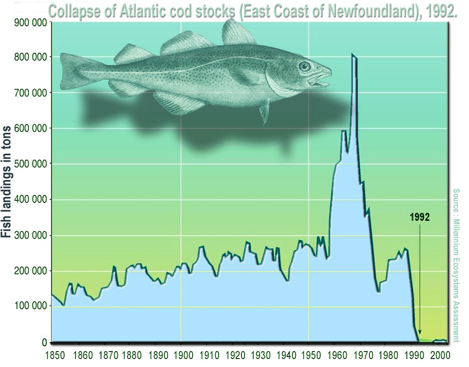
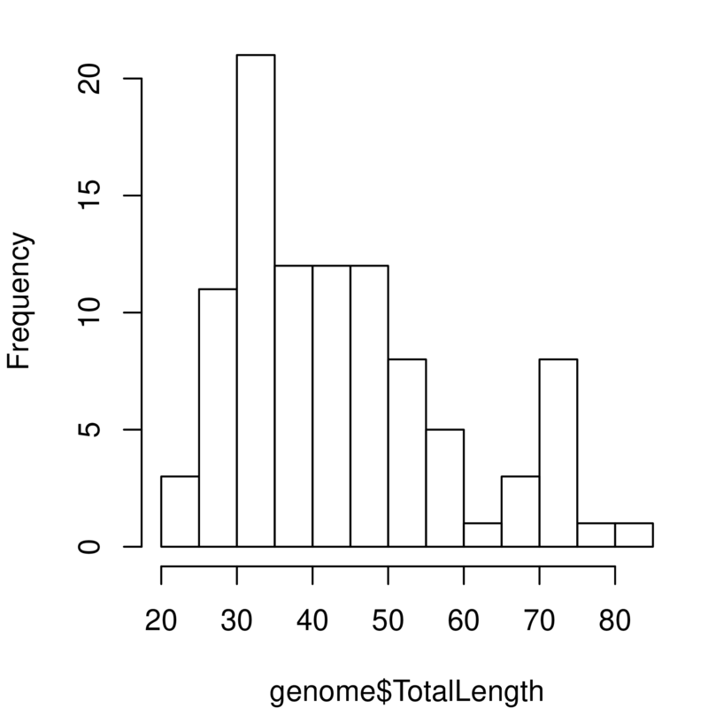
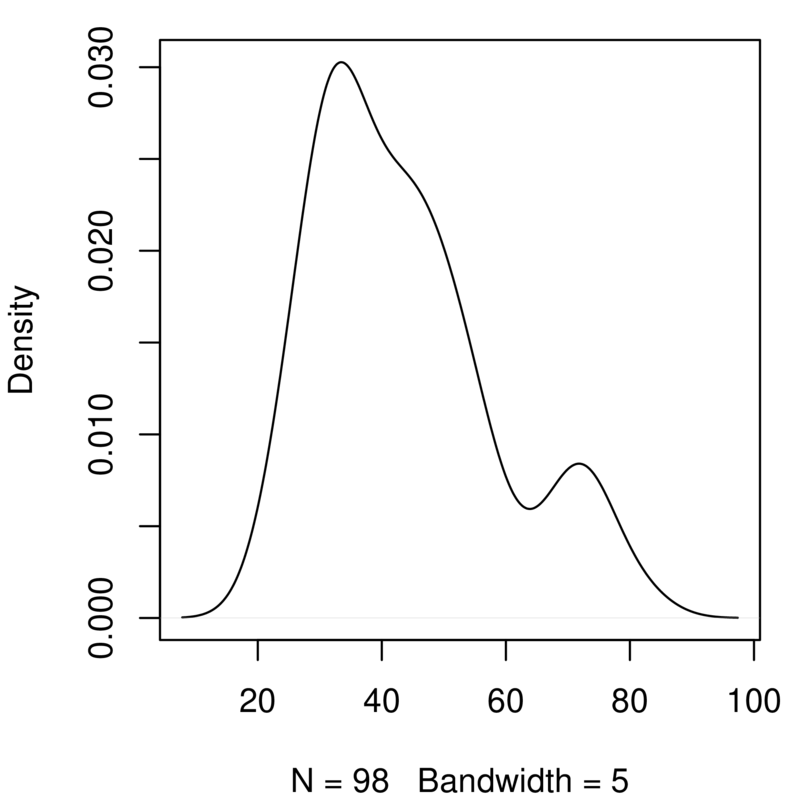
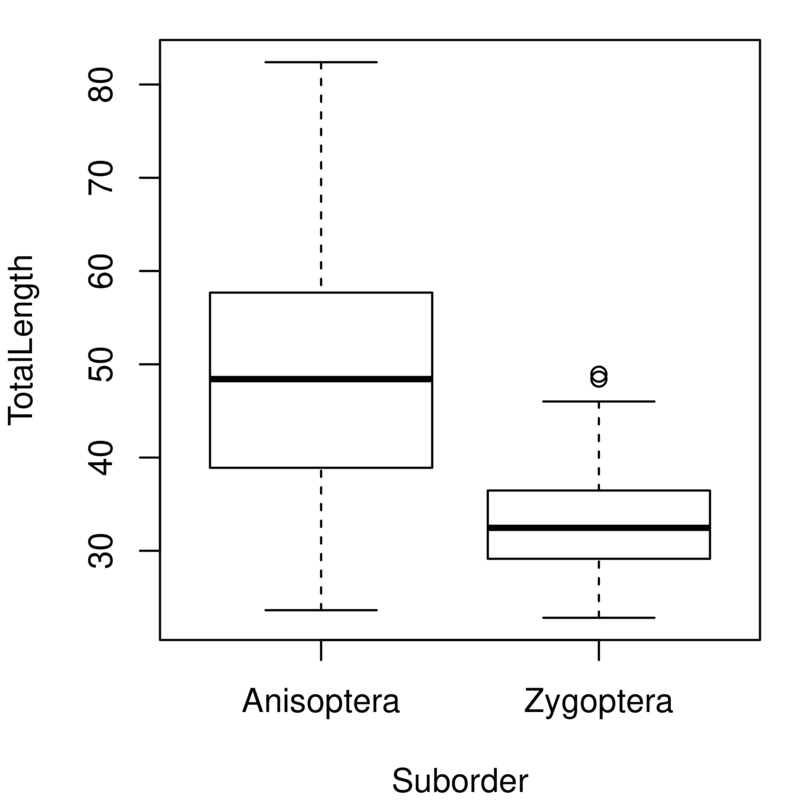
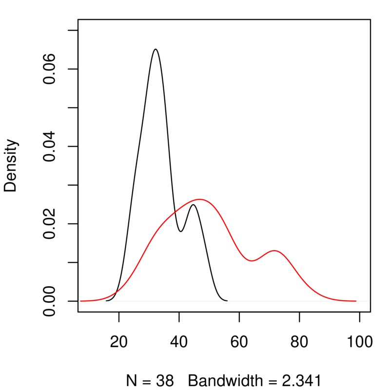
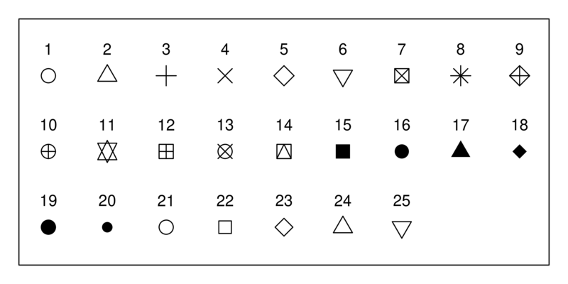
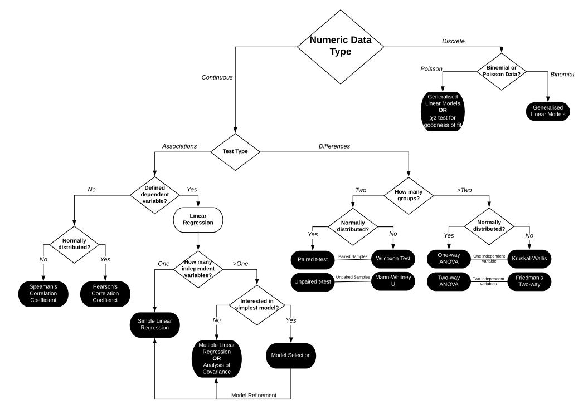

Experimental design and data exploration#
Learning goals
By the end of this chapter you should be able to:
Translate biological questions into precise, testable hypotheses
Identify experimental units, treatments, controls, and response variables in a study design
Explain the critical roles of replication, randomisation, and blocking
Recognise and avoid common design pitfalls: pseudoreplication, confounding, inadequate controls
Explain how sample size affects precision and statistical power
Use exploratory summaries and plots to check data in the light of the study design
Critique real-world experimental designs for validity and inferential strength
Prerequisites
This chapter follows Data management and visualisation in R. Before starting, you should be able to:
import and inspect a dataset without altering the raw file;
calculate simple summaries and make basic plots in R; and
distinguish a measured zero from a missing observation.
Introduction#
In the previous chapter, you turned raw observations into checked tables and informative figures. That workflow can reveal a pattern, but it cannot tell you on its own what population the pattern represents, whether a treatment caused it, or which observations count as independent evidence. Those questions depend on how the data were generated.
The Pound Hill practical gave us a glimpse of this. We calculated richness for each quadrat, but compared cultivation treatments using plots because cultivation was assigned at the plot level. Treating every quadrat as an independent treatment replicate would make the evidence look stronger than it is. That is a question of experimental design, not an R command.
We now move from describing data to reasoning about inference. We will connect biological questions to hypotheses, populations, samples, experimental units and response variables; examine replication, randomisation and sample size; and then use exploratory summaries and plots to ask whether the observed data fit the question and design. Experiments rarely go exactly to plan (do they ever?), and you may also inherit data collected by somebody else, so both stages matter.
Let us begin with the statistical language needed to make those links precise.
Some statistical parlance#
The following terms are important for you to get familiar with:
(Statistical) Population: A complete set of items that share at least one attribute of interest. This attribute of interest is the target of your statistical analysis. For example, if we are interested in studying the weight of year-old cod in the Oceans, the population consists of all year-old cod, but more specifically, the weight measurements of all the individuals of the cod population is what we want to analyse.


Fig. 19 Collapse of Atlantic cod stocks off the East Coast of Newfoundland in 1992.
(Source: Wikipedia)#
(Statistical) Distribution: A mathematical description (expressed as a mathematical equation) of the properties of a population of interest. Theoreticians have come up with a bunch of distributions (e.g., Gaussian or Normal, Poisson, Binomial, etc.) that are appropriate for different kinds of data. Figuring out which distribution best describes a population of interest is one of the first steps in a statistical analysis. The primary goal of experimental design is to collect and measure sufficient individuals of a population to adequately characterize the statistical properties of an attribute (e.g., body weight of yearling cod) of interest. That is, the statistical distribution that best characterizes the attribute.
(Data or Population) Sample: A data sample is a set of measurements of the attribute of interest collected from a (statistical) population (all the individuals of interest) by a defined procedure (sampling methodology). In the cod example above, this could be the weight of every individual of a subset (the sample) of the year-old cod population. This could be from a particular location, such as the Atlantic ocean.
(Statistical) Parameter : A measure of some attribute of the (theoretical) statistical distribution that is supposed to represent your population. An example would be the average weight of all yearling cod, which presumably follow some sort of distribution. In practice, this is not measurable because the population is much too large or incompletely inaccessible/invisible — imagine measuring the weight of every year-old cod individual in the Atlantic ocean!
Statistic (singular): An estimate of a statistical parameter of the population of interest, obtained by calculating the measure for a sample. An example would be the average or mean weight of individuals in a sample of one-year old cod in the Atlantic Ocean. This is also known as a descriptive statistic. Therefore, a Statistic is to a Statistical Parameter what a Sample is to the (Statistical) Population. For example, the average of a sample of cod weights is a statistic that estimates the “real” average of the weights of the entire one-year Cod population (which is its statistical parameter). This real average is also the mean value of the theoretical distribution (e.g., Gaussian) that the population is expected to follow.
Hypothesis: An informed postulate about an attribute of your population of interest. For example, you may hypothesize that the one-year old cod population’s mean weight has declined over the last two decades because of preferential fishing of larger individuals. You will typically confront your main hypothesis with a Null Hypothesis, to minimize the risk of making a significant Type I error. This is the probability of wrongly accepting an alternative (or main) hypothesis even is not really true, and rejecting the null hypothesis (e.g., the yearling cods have in reality not declined in weight, but you wrongly infer that they have). This is a big NO NO from a scientific and philosophical standpoint. The rate or probability of the Type I error is denoted by the Greek letter \(\alpha\), and equals the significance level of a statistical test. Wrongly rejecting a true alternative (main) hypothesis is also a Type II error
Descriptive Statistics#
The key statistical measures that describe a sample (or a population) are:
Mean (or average, or more precisely, the arithmetic mean): This is a measure of the central tendency of the sample and population (what values most of the data tend to have). Given a sample \(x_1,x_2,\ldots,x_n\) of size \(n\), the mean is typically denoted by a \(\bar{x}\):
That is, it is the sum of all the values in a sample divided by the number, \(n\), of items in the sample.
Standard deviation: A measure of spread of the population around the mean. This is typically denoted by \(s\),and is calculated as:
That is, it is the square root of the sum of squares (“SS”) of the differences between each item in the sample and the mean, divided by the degrees of freedom, “df” remaining in the data set (\(n-1\)). df is the sample size, \(n\), minus the number of statistical parameters estimated from the data set. This is to reduce the bias in your estimate of the statistic, as you are calculating it from the sample, and not the whole theoretical population.
Thus, the formula for \(s\) above has \(n-1\) in its denominator because, to work out the standard deviation, you must have already estimated the mean (\(\bar{x}\)) from the same data set. This removes 1 degree of freedom. Also, note that the sample variance, \(s^2\) is the square of standard deviation. Or, in other words, the standard deviation is the square-root of the variance!
Median: The above two statistics (mean and sd) are particularly meaningful when the sample and population have a symmetric distribution (e.g., normal or gaussian). When the distribution is not symmetric (that is, it is skewed), the median is a better measure of central tendency. This is the middle value in the ordered set of data. That is, exactly 50% of the data lie below and 50% lie above the median.
Other descriptive statistics you should keep in mind is the range (difference between the largest and smallest values), and the quartiles (values lying in the data divided into the intervals \([{1\over4}, {1\over 2},{3\over 4}, 1]\) or at 1% intervals (percentiles). Box-plots, which you have seen, represent a number of these statistics in one figure, as you will soon learn in practice below.
Descriptive statistics in R#
Here are the R commands for the key descriptive statistics:
Command |
Functionality |
|---|---|
|
Compute mean (of a vector or matrix) |
|
Standard deviation |
|
Variance |
|
Median |
|
Compute the 0.05 quantile |
|
range of the data |
|
Minimum |
|
Maximum |
|
Sum all elements |
Data types and (statistical) distributions#
You will typically encounter or sample the following main types of data:
Continuous numeric: Data that can take decimal values (real numbers) such as human height or weight. These may be unbounded (any value between negative infinity to positive infinity), or bounded (e.g., between or zero and some upper positive number) like human weight. This is the
numericorrealdata type in R.Discrete numeric: Integer (whole) numbers such as counts of individuals in a population, e.g., The number of bacteria in a ml of pond water. This is the
intdata type in R.Percentage (proportion): A particular kind of numeric data that is strictly bounded between 0 and 100. The fact that you can never get samples of percentages that exceed these bounds makes such data tricky to analyse. This also falls under the
numericorrealdata type in R.Categorical: Consisting of a fixed number of discrete categories. These are typically stored as a factor in R, with the categories stored as levels in character (string) data type format. For example, the factor “Type.of.feeding.interaction” from the predator-prey dataset you have used previously had five levels: “insectivorous”, “piscivorous”, “planktivorous”, “predacious”, and “predacious/piscivorous”.
Binary (presence/absence): A special type of categorical data are binary, where only two categories/states/values are possible: (1, 0) (or “present”, “absent”) (e.g., a disease symptom). These may be stored as integer, character, or boolean (
TRUE/FALSE) in R.
While designing experiments or exploring data, you need to keep in mind that each data type will often be best-represented by a particular statistical distribution. For example, continuous numeric data are often normally distributed. On the other hand, count data are likely to be distributed according to the Poisson distribution.
If you are lucky, you will mostly have to deal with data that are continuous or discrete numeric, which are the most straightforward to analyse using Linear models (more on that in subsequent chapters). However, some of the most interesting and important problems in biology involve proportion (percentage), categorical and binary data (e.g., Presence or absence of a disease symptom).
For example, think about what type of data, and what type of distribution, a sample of the following is likely to be:
Wavelength of light
Temperature
Egg clutch size
rate of a reaction
Eye-colour
Score in Scrabble
Undregraduate Degree class
Ground-cover of grass in a quadrat
Winning side in chess
Sampling from distributions in R#
You can generate samples form many statistical distributions in R. This is a handy thing to know because this allows you to simulate a sampling “experiment” . In particular, the following R commands are important:
Command |
Functionality |
|---|---|
|
Draw |
|
Density function of the normal distribution, which can be used to calculate the probability of a particular event or a set of independent events |
|
Cumulative density function |
|
Twenty random numbers from uniform distribution with bounds \([0, 2]\) |
|
Twenty random numbers from the Poisson(\(\lambda\)) distribution |
Let’s try some of these. Generate a random sample of 10:
MySample <- rnorm(10, m=0, sd=1)
MySample
- 1.4497006676572
- 0.829329427468158
- -1.07257270436991
- -1.12873369252643
- 0.0160341333031205
- -0.4563116021884
- -1.02422334680777
- 0.466314040756792
- 3.12492044270979
- 0.802467264150807
hist(MySample)

Probability of getting a value of 1 or -1 from a normally distributed random number with mean = 0 and sd = 1:
dnorm(1, m=0, sd=1)
dnorm(-1, m=0, sd=1)
Probability of getting large values given the same distribution:
dnorm(10, m=0, sd=1)
Very small!
dnorm(100, m=0, sd=1)
Zero!
Look up the documentation and examples for the other commands/functions listed above and many others that are available.
Two basic rules of experimental design and sampling#
In general, while designing experiments, and sampling from a population, there are two key (and simple) rules:
The more you sample, the more your sample’s distribution will look like the population distribution (obviously!)
The more you sample, the closer will your sample statistic be to the population’s statistical parameter (the central limit theorem; when the statistical parameter is the mean, this is the “law of large numbers”)
Let’s test rule 1 using R. We will perform a “experiment” by generating random samples of increasing size from the normal distribution:
MySample5 <- rnorm(5, m=0, sd=1) # Draw 5 normal random nos w/ mean 0 and s.d. 1:
MySample10 <- rnorm(10, m=0, sd=1)
MySample20 <- rnorm(20, m=0, sd=1)
MySample40 <- rnorm(40, m=0, sd=1)
MySample80 <- rnorm(80, m=0, sd=1)
MySample160 <- rnorm(160, m=0, sd=1)
Now let’s visualize these “samples”:
par(mfcol = c(2,3)) #initialize multi-paneled plot
par(mfg = c(1,1)); hist(MySample5, col = rgb(1,1,0), main = 'n = 5')
par(mfg = c(1,2)); hist(MySample10, col = rgb(1,1,0), main = 'n = 10')
par(mfg = c(1,3)); hist(MySample20, col = rgb(1,1,0), main = 'n = 20')
par(mfg = c(2,1)); hist(MySample40, col = rgb(1,1,0), main = 'n = 40')
par(mfg = c(2,2)); hist(MySample80, col = rgb(1,1,0), main = 'n = 80')
par(mfg = c(2,3)); hist(MySample160, col = rgb(1,1,0), main = 'n = 160')

Rule 2 above states that if you repeat even \(n = 5\) a sufficient number of times, the distribution of sample means will centre on the population mean (= 0). Try it: draw an increasing number of samples of five, calculate the mean of each sample, and see what happens to the distribution of those means.
Larger samples can improve precision, but sample size cannot rescue a study whose observations are not independent or whose treatments are confounded. Replication, randomisation and the identity of the experimental unit still determine what the study can test.
A power analysis asks how likely a proposed design is to detect an effect of a specified size at a chosen significance level. It can help you reason about sample size, but only after the effect, variability and structure of the design have been stated. A full treatment is outside the scope of this chapter.
Once the data have been collected, the design does not disappear. It tells you which rows are independent, which are subsamples, and which comparisons answer the original question. With that structure in mind, we can move on to data exploration.
Data exploration#
Some general tips#
You already know how to make and save plots. Here we use them for a different purpose: to interrogate the data before fitting a model. Exploration is not a hunt for whichever test makes the result significant. It is a check that the variables, observations and patterns are compatible with the question and the design.
Start with a few questions:
What is the response variable, and what values can it take? Look for missing values, impossible values, outliers, skew and multiple modes. A second peak may indicate an unrecognised group or process, but the plot alone cannot tell you which.
How does the response vary among the groups defined by the design? Compare both the centres and the spreads; a mean without the underlying observations can hide a great deal.
If the question concerns two continuous variables, inspect their individual distributions and their relationship. Look for curvature, changing spread and influential observations rather than assuming a straight line.
Which points are genuinely independent? Plotting every subsample is useful, but it does not turn subsamples into treatment replicates.
These checks can expose problems and suggest plausible models. They do not replace the biological hypothesis or the sampling design, and they do not prove that a particular statistical distribution generated the data.
A case study#
As a case study, we will use data from a paper looking at the relationship between genome size and body size across species of dragonflies and damselflies (Odonata):
Ardila-Garcia, AM & Gregory, TR (2009) ‘An exploration of genome size diversity in dragonflies and damselflies (Insecta: Odonata)’ Journal of Zoology, 278, 163 - 173
You will work with the script file exp_design.R, which performs exploratory analyses on genome_size.csv. The plotting commands should be familiar from the previous chapter; concentrate here on the reasoning. Each row represents a species-level estimate, not an individual insect, so ask what the plots can reveal and what the data cannot resolve. We will go through the code block by block.
\(\star\) Start in your coursework project root. Download exp_design.R into code/.
\(\star\) Download genome_size.csv into data/.
\(\star\) Open the script exp_design.R in RStudio (or some other text editor).
Use the shift and arrow keys to select the code in block (2), including the comments. Now use the keyboard short cut (look back at the R Chapters if you don’t know how!) to run the highlighted block of code.
genome <- read.csv('data/genome_size.csv', stringsAsFactors = TRUE)
genome$genome_size <- as.numeric(as.character(genome$GenomeSize))
The relative path data/genome_size.csv means: start from the project root, open data, then open the CSV file. The stringsAsFactors = TRUE argument asks R to store text columns as factors. Since R 4.0.0, the default has been FALSE, so it is helpful to state the choice explicitly when the analysis expects factors. See the R Project explanation of this change.
This first line (block (1)) reads in the data, as you have learned previously.
\(\star\) Now run the code in block (2) line by line.
head(genome) # this won't look so nice on your computer!
| Suborder | Family | Species | GenomeSize | GenomeSE | GenomeN | BodyWeight | TotalLength | HeadLength | ThoraxLength | AdbdomenLength | ForewingLength | HindwingLength | ForewingArea | HindwingArea | MorphologyN | genome_size | |
|---|---|---|---|---|---|---|---|---|---|---|---|---|---|---|---|---|---|
| <fct> | <fct> | <fct> | <dbl> | <dbl> | <int> | <dbl> | <dbl> | <dbl> | <dbl> | <dbl> | <dbl> | <dbl> | <dbl> | <dbl> | <int> | <dbl> | |
| 1 | Anisoptera | Aeshnidae | Aeshna canadensis | 2.20 | NA | 1 | 0.159 | 67.58 | 6.83 | 11.81 | 48.94 | 45.47 | 45.40 | 369.57 | 483.61 | 2 | 2.20 |
| 2 | Anisoptera | Aeshnidae | Aeshna constricta | 1.76 | 0.06 | 4 | 0.228 | 71.97 | 6.84 | 10.72 | 54.41 | 46.00 | 45.48 | 411.15 | 517.38 | 3 | 1.76 |
| 3 | Anisoptera | Aeshnidae | Aeshna eremita | 1.85 | NA | 1 | 0.312 | 78.80 | 6.27 | 16.19 | 56.33 | 51.24 | 49.47 | 460.72 | 574.33 | 1 | 1.85 |
| 4 | Anisoptera | Aeshnidae | Aeshna tuberculifera | 1.78 | 0.10 | 2 | 0.218 | 72.44 | 6.62 | 12.53 | 53.29 | 49.84 | 48.82 | 468.74 | 591.42 | 2 | 1.78 |
| 5 | Anisoptera | Aeshnidae | Aeshna umbrosa | 2.00 | NA | 1 | 0.207 | 73.05 | 4.92 | 11.11 | 57.03 | 46.51 | 45.97 | 382.48 | 481.44 | 1 | 2.00 |
| 6 | Anisoptera | Aeshnidae | Aeshna verticalis | 1.59 | NA | 1 | 0.220 | 66.25 | 6.48 | 11.64 | 48.13 | 45.91 | 44.91 | 400.40 | 486.97 | 1 | 1.59 |
str(genome) # Check what the data columns contain
'data.frame': 100 obs. of 17 variables:
$ Suborder : Factor w/ 2 levels "Anisoptera","Zygoptera": 1 1 1 1 1 1 1 1 1 1 ...
$ Family : Factor w/ 9 levels "Aeshnidae","Calopterygidae",..: 1 1 1 1 1 1 1 1 1 1 ...
$ Species : Factor w/ 100 levels "Aeshna canadensis",..: 1 2 3 4 5 6 8 17 46 53 ...
$ GenomeSize : num 2.2 1.76 1.85 1.78 2 1.59 1.44 1.16 1.44 1.2 ...
$ GenomeSE : num NA 0.06 NA 0.1 NA NA NA NA NA NA ...
$ GenomeN : int 1 4 1 2 1 1 1 1 1 1 ...
$ BodyWeight : num 0.159 0.228 0.312 0.218 0.207 0.22 0.344 0.128 0.392 0.029 ...
$ TotalLength : num 67.6 72 78.8 72.4 73 ...
$ HeadLength : num 6.83 6.84 6.27 6.62 4.92 6.48 7.53 5.74 8.05 5.28 ...
$ ThoraxLength : num 11.8 10.7 16.2 12.5 11.1 ...
$ AdbdomenLength: num 48.9 54.4 56.3 53.3 57 ...
$ ForewingLength: num 45.5 46 51.2 49.8 46.5 ...
$ HindwingLength: num 45.4 45.5 49.5 48.8 46 ...
$ ForewingArea : num 370 411 461 469 382 ...
$ HindwingArea : num 484 517 574 591 481 ...
$ MorphologyN : int 2 3 1 2 1 1 4 1 1 1 ...
$ genome_size : num 2.2 1.76 1.85 1.78 2 1.59 1.44 1.16 1.44 1.2 ...
Have a good look at the data. There are three factors (categorical variables): Suborder, splitting the species into dragonflies (Anisoptera) and damselflies (Zygoptera); Family, splitting the species further into 9 taxonomic families; and Species, giving the latin binomial for each species in the table. The remaining columns are measurements of genome size (in picograms) and measurements of body size and morphology (in grams, mm and mm\(^2\)). There are two columns ending with an N that show the sample size from which the observations for each species are taken and a column ending SE showing standard errors.
One thing you should see in the output from head or str is that some observations are marked as NA — this is how R represents missing data. It is important to check how much data are missing, so we’ll use another function that includes this information. Many R functions require you to say how missing values should be handled. For functions that support it, na.rm = TRUE asks R to remove missing values before doing the calculation.
\(\star\) run the summary line from the script window (block 3).
summary(genome)
Suborder Family Species GenomeSize
Anisoptera:62 Coenagrionidae:27 Aeshna canadensis : 1 Min. :0.4100
Zygoptera :38 Libellulidae :25 Aeshna constricta : 1 1st Qu.:0.7375
Gomphidae :14 Aeshna eremita : 1 Median :0.9400
Aeshnidae :11 Aeshna tuberculifera: 1 Mean :1.0143
Corduliidae : 9 Aeshna umbrosa : 1 3rd Qu.:1.1800
Lestidae : 7 Aeshna verticalis : 1 Max. :2.3600
(Other) : 7 (Other) :94
GenomeSE GenomeN BodyWeight TotalLength
Min. :0.00600 Min. : 1.00 Min. :0.00200 Min. :22.82
1st Qu.:0.02000 1st Qu.: 1.00 1st Qu.:0.01200 1st Qu.:32.35
Median :0.03000 Median : 1.00 Median :0.04000 Median :41.41
Mean :0.03398 Mean : 2.36 Mean :0.07486 Mean :43.76
3rd Qu.:0.04000 3rd Qu.: 3.00 3rd Qu.:0.10975 3rd Qu.:51.74
Max. :0.10000 Max. :12.00 Max. :0.39200 Max. :82.39
NA's :55 NA's :2 NA's :2
HeadLength ThoraxLength AdbdomenLength ForewingLength
Min. :1.11 Min. : 3.150 Min. :13.29 Min. :12.07
1st Qu.:1.91 1st Qu.: 5.645 1st Qu.:24.62 1st Qu.:20.76
Median :3.75 Median : 7.585 Median :28.39 Median :27.55
Mean :3.62 Mean : 8.283 Mean :31.89 Mean :29.74
3rd Qu.:4.93 3rd Qu.:10.720 3rd Qu.:38.12 3rd Qu.:36.89
Max. :8.05 Max. :16.190 Max. :61.35 Max. :55.99
NA's :3 NA's :2 NA's :2 NA's :4
HindwingLength ForewingArea HindwingArea MorphologyN
Min. :11.45 Min. : 21.04 Min. : 19.39 Min. : 1.000
1st Qu.:19.95 1st Qu.: 62.94 1st Qu.: 56.66 1st Qu.: 1.000
Median :26.80 Median :145.95 Median :177.03 Median : 2.000
Mean :28.54 Mean :174.32 Mean :205.84 Mean : 2.949
3rd Qu.:35.40 3rd Qu.:226.91 3rd Qu.:279.36 3rd Qu.: 4.000
Max. :54.59 Max. :527.92 Max. :632.77 Max. :13.000
NA's :4 NA's :4 NA's :4 NA's :2
genome_size
Min. :0.4100
1st Qu.:0.7375
Median :0.9400
Mean :1.0143
3rd Qu.:1.1800
Max. :2.3600
Note that each column gets a separate summary! Look carefully at the output. There is a column for each variable: for factors, it provides a short table of the number of observations in each level and for continuous variables, it provides some simple summary statistics about the distribution (range, quartiles, mean and median), and the number of missing values.
Visualise distributions of the variables#
The summary function shows us the basic distribution (range, quartiles, mean and median) of a continuous variable, but this is easier to interpret if we visualise it. We’ll look at two ways:
Histogram: In the simplest form, this shows the number of observations of the variable falling into a set of bins spanning the range of the variable. The option
breaksallows you to change the number of bins.Density plot: rather than showing blocks of counts, the density plot shows a continuous smooth line. This is a smoothed estimate of the how frequently data is observed across the range of values and the bandwidth (
bw=0.1) controls the degree of the smoothing.
\(\star\) Go to block (4) of the script and run each line separately, looking at the output.
hist(genome$genome_size, breaks=10)

plot(density(genome$genome_size, bw=0.1))

In your code editor, change the values of breaks and bw (for example breaks=5 and bw=0.05), and re-run these lines to see how this affects the graph. Basically, with both types of graph you can look at the data too coarsely or too finely.
The graphs you’ve just created look at genome size. Add a copy of those two lines of code in the script and change them to look at the variable TotalLength. You will need to alter the density function to ignore missing values (na.rm=TRUE) and to play around with the bandwidth. You should get something like this:




Take a quick look at effects of certain factors#
R has a special way of describing a model that defines the response variable and the explanatory variables (“factors”). This is called a ‘formula’ and is used to define linear models (more on these in a later chapters). The same structure is used in many plotting functions and will put the response variable on the \(y\) axis and the explanatory variable on the \(x\) axis. The structure is “response variable ~ explanatory variables”. We will look at multiple explanatory variables in a later chapter but an example with one explantory variable (factor) is:
Genome Size ~ Suborder
This formula tells R to model genome size ‘as a function of’ (~) the suborders of Odonata. When using this syntax in a boxplot function, the result will be to plot genome size as a function of the suborders.
##’ Compare distribution of the variable across levels of a factor
Although looking at the distribution of variables is a good first step, we often want to compare distributions. In this case, we might want to know how genome size varies between dragonflies and damselflies. The first way we will look at is using boxplots — these show the median and the 25% and 75% quantiles as a box, with whiskers extending to the minimum and maximum. More extreme outliers are plotted independently as points. The plot function in R automatically generates a boxplot when the explanatory variable is a factor (i.e., provided you have the necessary grouping columns deignated to be the factor class; review the variable types and data structures sections of the R Chapter if this sounds like greek to you).
\(\star\) Go to block 5 of the script and run the first line, looking at genome size between the two suborders:
plot(genome_size ~ Suborder, data=genome)

Duplicate and alter this line to look at the same plot for total length. You should get a plot like this:


Although histograms are great for one variable, plotting two histograms on top of one another rarely works well because the overlapping bars are hard to interpret (recall the predator-prey body size example). Density plots don’t have this problem, but it takes a bit more code to create the plot.
\(\star\) Block 6 of the script uses the subset function to create two new data frames separating the data for dragonflies and damselflies. run the first two lines of this block:
Anisoptera <- subset(genome, Suborder=='Anisoptera') #The dragonflies
Zygoptera <- subset(genome, Suborder=='Zygoptera') #The damselflies
remember that the arrow symbol (<-) is used to save the output of a function into a new
object in R — if you use ls() in the console, you will see the two new data frames.
In the console, use str and summary to explore these two new dataframes. For example:
head(Anisoptera)
| Suborder | Family | Species | GenomeSize | GenomeSE | GenomeN | BodyWeight | TotalLength | HeadLength | ThoraxLength | AdbdomenLength | ForewingLength | HindwingLength | ForewingArea | HindwingArea | MorphologyN | genome_size | |
|---|---|---|---|---|---|---|---|---|---|---|---|---|---|---|---|---|---|
| <fct> | <fct> | <fct> | <dbl> | <dbl> | <int> | <dbl> | <dbl> | <dbl> | <dbl> | <dbl> | <dbl> | <dbl> | <dbl> | <dbl> | <int> | <dbl> | |
| 1 | Anisoptera | Aeshnidae | Aeshna canadensis | 2.20 | NA | 1 | 0.159 | 67.58 | 6.83 | 11.81 | 48.94 | 45.47 | 45.40 | 369.57 | 483.61 | 2 | 2.20 |
| 2 | Anisoptera | Aeshnidae | Aeshna constricta | 1.76 | 0.06 | 4 | 0.228 | 71.97 | 6.84 | 10.72 | 54.41 | 46.00 | 45.48 | 411.15 | 517.38 | 3 | 1.76 |
| 3 | Anisoptera | Aeshnidae | Aeshna eremita | 1.85 | NA | 1 | 0.312 | 78.80 | 6.27 | 16.19 | 56.33 | 51.24 | 49.47 | 460.72 | 574.33 | 1 | 1.85 |
| 4 | Anisoptera | Aeshnidae | Aeshna tuberculifera | 1.78 | 0.10 | 2 | 0.218 | 72.44 | 6.62 | 12.53 | 53.29 | 49.84 | 48.82 | 468.74 | 591.42 | 2 | 1.78 |
| 5 | Anisoptera | Aeshnidae | Aeshna umbrosa | 2.00 | NA | 1 | 0.207 | 73.05 | 4.92 | 11.11 | 57.03 | 46.51 | 45.97 | 382.48 | 481.44 | 1 | 2.00 |
| 6 | Anisoptera | Aeshnidae | Aeshna verticalis | 1.59 | NA | 1 | 0.220 | 66.25 | 6.48 | 11.64 | 48.13 | 45.91 | 44.91 | 400.40 | 486.97 | 1 | 1.59 |
Now that we’ve got the data separated we can go about plotting the two curves.
\(\star\) run the next two lines of code in block 6. The first draws the plot for damselflies and the second adds a line for the dragonflies:
plot(density(Zygoptera$genome_size), xlim=c(0.1, 2.7), ylim=c(0,1.7))
lines(density(Anisoptera$genome_size), col='red')

Duplicate these last two lines of code and edit them to generate a similar plot for total body length. You will need to edit the code to change the range of the \(x\) and \(y\) axes (xlim and ylim) to get both curves to fit neatly on to the graph. It should look like this:


Explore further by scatter-plotting two variables#
Once we’ve looked at the distribution of variables, the next thing is to look at the relationships between continuous variables using scatterplots. The plot function in R automatically generates a scatterplot when the explanatory variable is continuous, so we can use the same syntax and structure as for the boxplot above.
\(\star\) Go to block (7) of the script and run the plot commands. The third one plots genome size as a function of body weight:
plot(genome_size ~ BodyWeight, data = genome)

The scatterplot seems to show a weak relationship between genome size and morphology. But maybe dragonflies and damselflies show different relationships, and we can’t distinguish between them! To explore this possibility, we need to plot the two orders using different colours or plot characters. In the next code block, we will customize the plots to show different types of points for each suborder. It is done by using indices.
\(\star\) run the first three lines of code in block 8. There are two levels of suborder and these two lines set up a colour and a plot symbol that will be used for each one.
str(genome$Suborder) #Confirm that there are two levels under suborders
Factor w/ 2 levels "Anisoptera","Zygoptera": 1 1 1 1 1 1 1 1 1 1 ...
You can see that there are two levels, with Anisoptera first and then Zygoptera. You can also see that these are stored as numeric values: 1 refers to the first level and 2 the second. We can use these as indices to pair the colours and plot symbols to each suborder. These are set in the plot function using the options col= and pch=, which stands for “ plot character”.
myColours <- c('red', 'blue') # So choose two colours
mySymbols <- c(1,3) # And two different markers
run the next plot command to see the resulting plot:
plot(genome_size ~ TotalLength , data = genome, #Now plot again
col = myColours[Suborder], pch = mySymbols[Suborder],
xlab='Total length (mm)', ylab='Genome size (pg)')
legend("topleft", legend=levels(genome$Suborder), #Add legend at top left corner
col= myColours, pch = mySymbols, cex = 1)

Thus each point gets the appropriate colour and symbol for its group. The factor levels in Suborder are stored internally as 1 and 2. myColours[Suborder] and mySymbols[Suborder] use those values to select the corresponding colour and symbol.
There are a lot of built in colours and plot symbols in R, so the next thing to experiment with is changing these to your own versions.
\(\star\) In the R commandline, type in the function colors().
You’ll see a long list of options to choose from, so pick two to replace red and blue in the plot above.
The options for the plot symbols are shown below. Pick two to replace the current symbol choices.


rerun the plot function and see what you get!
Saving your results#
Saving the exploratory graphics#
The script uses the approach you learned previously to save its exploratory plots as results/genome_size.pdf. The function pdf opens a new PDF file. Its width and height are measured in inches. When the plots are complete, dev.off() closes the file and makes it readable.
\(\star\) From the project root, run the complete script with Rscript code/exp_design.R.
Open results/genome_size.pdf. Its final page should use your choice of colours and symbols.
Saving other results#
You can also save the data and variables in R format. This makes it easy to restart where you left off. The script saves the data and your colour and symbol choices as results/genome_size.rda; the two subsets are easy to recreate, so they are not included.
\(\star\) If you are working through the script line by line, run the final line in block (10).
Still in the script window, choose ‘File \(\triangleright\) Save’ to save your changes to the script file.
Quit from R by typing q() at the R command prompt. You can also use ctrl+D in unix).
From data exploration to statistical analysis#
Data exploration narrows the set of sensible analyses, but it does not choose a test mechanically. Return first to the biological question and the design: identify the response, the explanatory variable, the experimental unit and any grouping or blocking. Then use the response type and the patterns you found to judge which model assumptions are plausible. The decision tree below connects those choices to methods developed in the following chapters.

